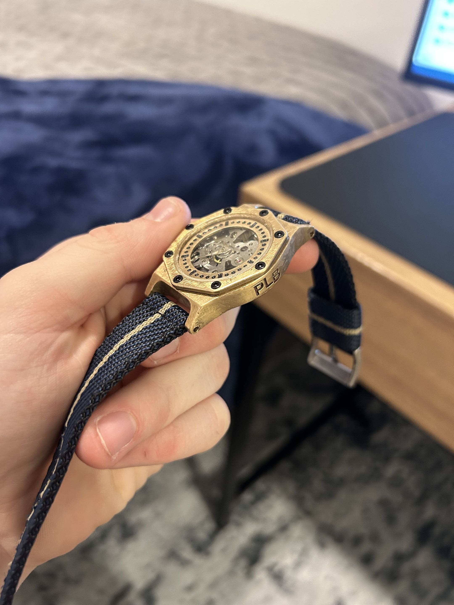
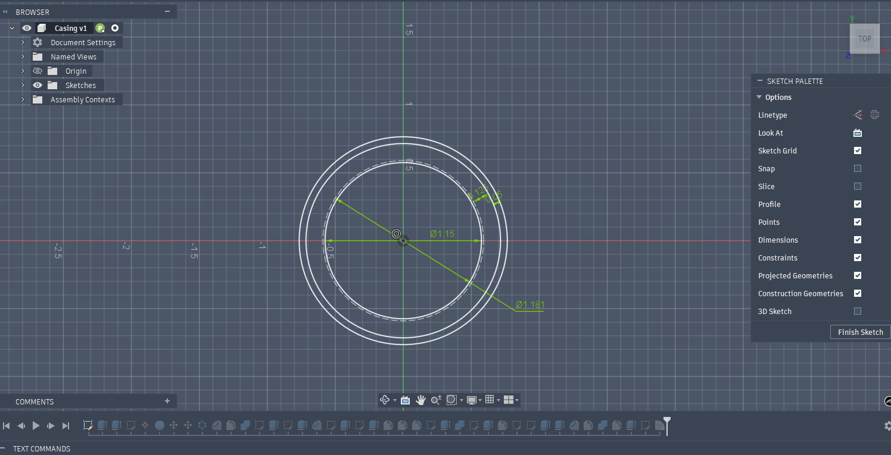
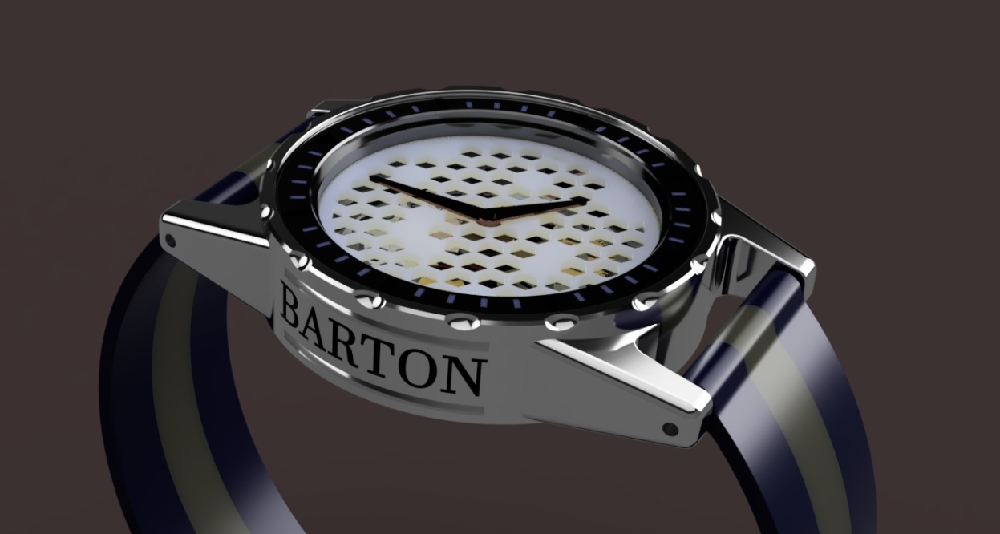
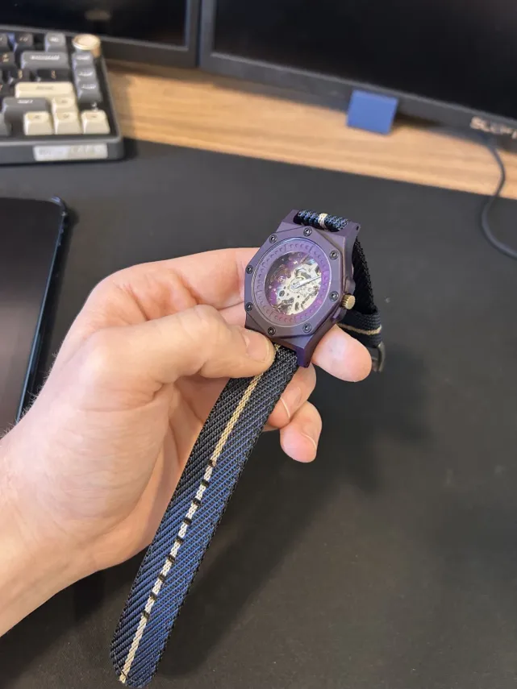
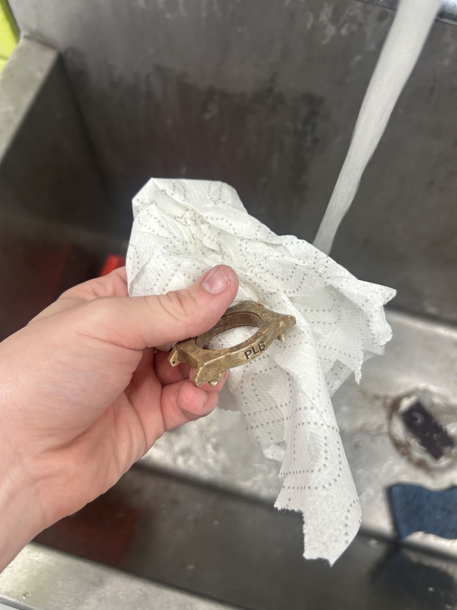
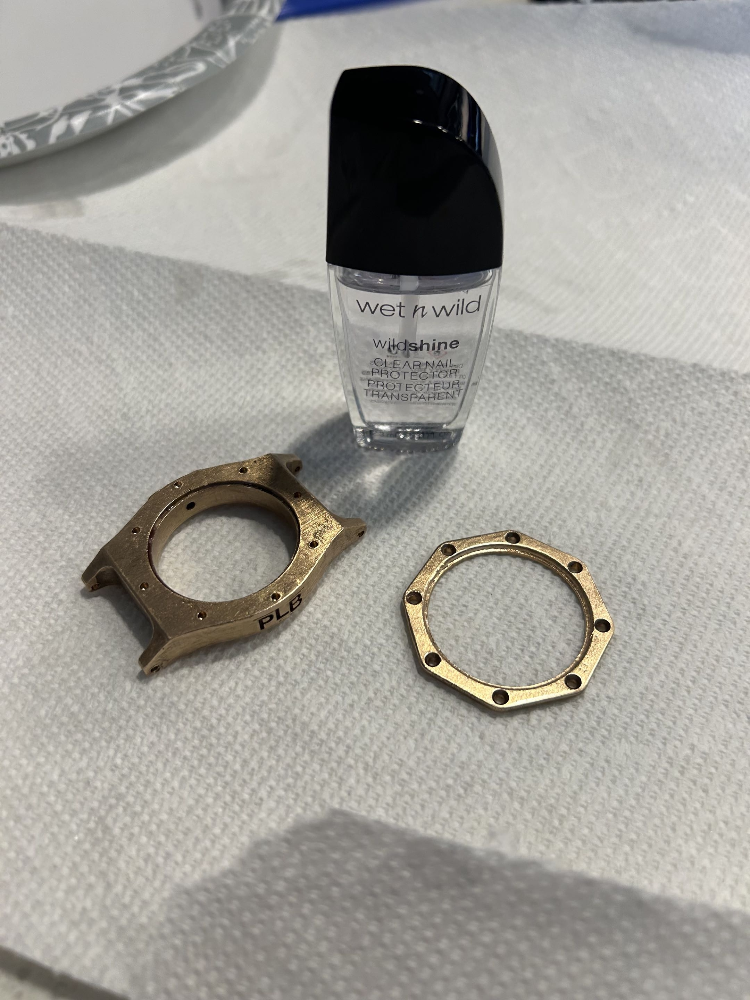

Personal · Worn daily
Cast Bronze Watch
A three-part bronze case designed around a purchased movement, printed in wax, investment cast, and finished by hand until it stopped looking like a casting. I have worn it every day since.
- Material
- Cast bronze
- Process
- Wax print → investment
cast → hand finish - Construction
- Three parts, 8 × M1 screws
- Bought in
- Movement, hands,
strap, hardware - CAD
- Fusion 360, parametric
- Finish
- Sanded, buffed, tumbled,
sealed - Revisions
- Two
- Status
- Worn daily
Designing around parts you did not make
I bought the movement, hands, strap and internal hardware, then designed and manufactured the case around them. That constraint is the whole project. The case is not a decorative shell: it has to locate a movement precisely, hold the hands at the right height, accept a standard strap, and still come apart if the movement ever needs service.
Designing to real bought-in dimensions is a different discipline to designing something whole. Every tolerance is somebody else's, every interface is fixed before you start, and fitment becomes the primary design constraint rather than an outcome.

CAD and revision
Modelled parametrically in Fusion so the critical dimensions could be driven from the movement, the face, the screw layout and the fit tolerances.
The final version is three parts: a main body, a partial face plate with recessed indicator lines instead of numbers, and a top retaining piece held down by eight M1 screws. Splitting it gave the face visual depth and made the movement accessible without disassembling the case.


Failure V1 · Serviceability
A case that could be assembled but not sensibly opened
The first version proved the shape and was too large and effectively unserviceable. It opened only from the top, so accessing or removing the movement after assembly was awkward. For a watch, that matters: batteries die, hands need setting, movements need attention.
Fix
Split the case into three. The separate face and retaining piece made assembly cleaner, service possible, and the design better looking, which is a suspiciously common result of fixing a functional problem.

Wax, mould, bronze
The finished parts were printed in wax to act as the pattern. This is where the process differs fundamentally from machining: the print quality directly determines the casting quality, and any surface defect or support mark carries all the way through to the finished bronze as extra hand work.
Unlike subtractive work, where you remove material from known stock, the wax has to account for how metal will fill the mould and how the part will be cleaned afterwards. Feature placement is a casting decision as much as a design one.


Finishing
Finishing was the longest phase by a wide margin. Casting stubs had to come off, surrounding surfaces levelled, and the case sanded until the geometry looked intentional again, without destroying the edges and details that define the design. Careful hand work, and slow.
Then buffing and tumbling. Bronze polishes beautifully and also oxidises and stains skin, which matters for something worn every day, so surface finish here is functional rather than cosmetic. I sealed the finished parts with clear coat to keep the metal off skin, and filled the recessed indicator lines with black to make the face readable.


What it taught me
- Design for assembly is design for disassembly. V1 went together fine. That was never the problem.
- Process determines geometry. A casting wants different features to a milled part, and pretending otherwise just moves the work to the bench.
- Post-processing is most of the schedule. On a cast part, the machine time is a fraction of the total. Estimating a project from the CAD alone underestimates it badly.
- Wearing it is the test. Skin contact, sweat and a year of knocks tell you things no bench check will.